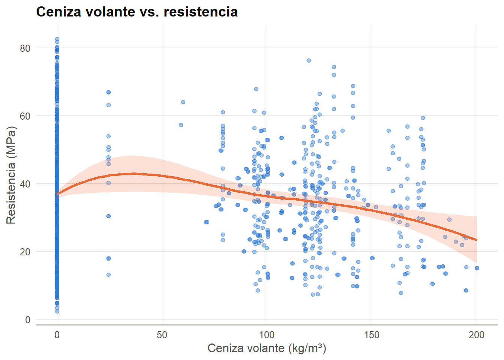
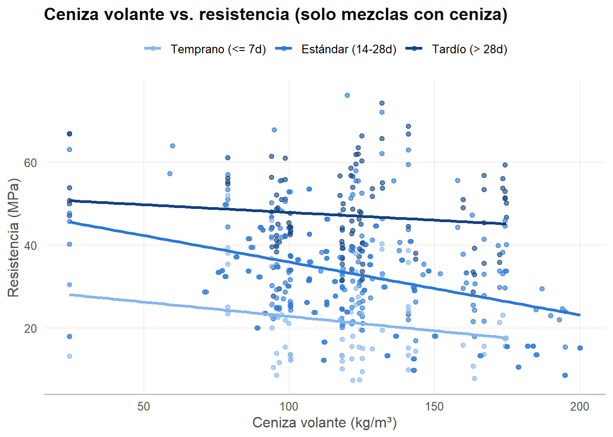

Capítulo 7 Correlación entre ceniza volante y resistencia
Este capítulo desarrolla el objetivo específico 4: determinar el grado de correlación entre la cantidad de ceniza volante dosificada y la resistencia alcanzada.
Nota metodológica. Como ninguna variable es normal (capítulo 3) y la ceniza tiene aproximadamente 55% de ceros, se usa la correlación de Spearman (basada en rangos) como medida principal y la de Pearson como referencia.
7.1 Hipótesis
Sea \(\rho_s\) la correlación de Spearman entre ceniza y resistencia.
\[H_0: \rho_s = 0 \qquad \text{vs.} \qquad H_1: \rho_s \neq 0\]
7.2 Verificación de supuestos
- Normalidad (para Pearson). \(H_0\): la variable es normal. Se usan los resultados del capítulo 3.
- Relación monótona (para Spearman). Se evalúa gráficamente con una curva suavizada y comparando Pearson con Spearman.
- Independencia. No se cumple del todo: la ceniza es constante dentro de una mezcla, y una misma mezcla aporta varias filas (sección 3.9.3). El tamaño de muestra efectivo es menor que 1,030 y los p-valores a nivel de fila son optimistas; se contrasta con una correlación a nivel de mezcla.
bind_rows(
fila_sup("Normalidad de ceniza", "Lilliefors",
"ceniza es normal", resultado_ceniza$p.value),
fila_sup("Normalidad de resistencia", "Lilliefors",
"resistencia es normal", resultado_resistencia$p.value)
) |>
tabla_kbl("Normalidad de las variables correlacionadas", digits = 4)| supuesto | prueba | H0 | p_valor | decision |
|---|---|---|---|---|
| Normalidad de ceniza | Lilliefors | ceniza es normal | 0.0000 | Se rechaza H0 |
| Normalidad de resistencia | Lilliefors | resistencia es normal | 0.0003 | Se rechaza H0 |
Ambas variables rechazan la normalidad (la ceniza, además, tiene aproximadamente 55% de ceros), por lo que la correlación de Pearson no es la medida adecuada y la inferencia se basa en Spearman, que solo exige una relación monótona. Con tantos valores repetidos (ceros) hay empates, por lo que el p-valor se calcula de forma asintótica (exact = FALSE).
7.3 Visualización
df_fe |>
ggplot(aes(x = ceniza, y = resistencia)) +
geom_point(alpha = 0.4, color = col_azul) +
geom_smooth(method = "loess", color = col_naranja, fill = col_naranja, alpha = 0.2, se = TRUE) +
labs(
title = "Ceniza volante vs. resistencia",
x = "Ceniza volante (kg/m³)",
y = "Resistencia (MPa)"
) +
tema_libro()
7.4 Correlación global
tibble(
metodo = c("Pearson", "Spearman"),
rho = c(
cor(df_fe$ceniza, df_fe$resistencia, method = "pearson"),
cor(df_fe$ceniza, df_fe$resistencia, method = "spearman")
),
p_valor = c(
cor.test(df_fe$ceniza, df_fe$resistencia, method = "pearson")$p.value,
cor.test(df_fe$ceniza, df_fe$resistencia, method = "spearman", exact = FALSE)$p.value
)
) |>
tabla_kbl("Correlación entre ceniza volante y resistencia (todas las mezclas)", digits = 4)| metodo | rho | p_valor |
|---|---|---|
| Pearson | -0.1058 | 0.0007 |
| Spearman | -0.0780 | 0.0123 |
La correlación global es débil (Spearman \(-0.08\), \(p = 0.012\); Pearson \(-0.11\)), pero eso no significa que la ceniza no haga nada. El 55% de las mezclas tiene ceniza igual a 0, y las que sí la usan también tienen menos cemento y menos edad. Esos otros factores tapan la relación.
7.5 Correlación solo en mezclas con ceniza
df_con_ceniza <- df_fe |> filter(ceniza > 0)
cor.test(df_con_ceniza$ceniza, df_con_ceniza$resistencia,
method = "spearman", exact = FALSE)##
## Spearman's rank correlation rho
##
## data: df_con_ceniza$ceniza and df_con_ceniza$resistencia
## S = 20118332, p-value = 0.000006024
## alternative hypothesis: true rho is not equal to 0
## sample estimates:
## rho
## -0.208346df_con_ceniza |>
ggplot(aes(x = ceniza, y = resistencia, color = etapa_curado)) +
geom_point(alpha = 0.6) +
geom_smooth(method = "lm", se = FALSE) +
scale_color_manual(values = cols_etapa) +
labs(
title = "Ceniza volante vs. resistencia (solo mezclas con ceniza)",
x = "Ceniza volante (kg/m³)",
y = "Resistencia (MPa)",
color = "Etapa de curado"
) +
tema_libro()
Entre las mezclas que sí usan ceniza la correlación es negativa y algo más fuerte (\(\rho = -0.21\), \(p < 0.001\)): a más ceniza, menos resistencia. El gráfico separa las etapas de curado y la tabla de la sección de etapas detalla cada una.
7.6 Correlación a nivel de mezcla
Para respetar la independencia se promedia la resistencia de cada mezcla (una observación por mezcla) y se correlaciona con su dosificación de ceniza. Es una verificación de sensibilidad, porque mezcla las edades.
df_mezcla <- df_fe |>
group_by(id_mezcla) |>
summarise(ceniza = first(ceniza), resistencia_media = mean(resistencia), .groups = "drop")
bind_rows(
tibble(
conjunto = "Todas las mezclas",
n_mezclas = nrow(df_mezcla),
spearman = cor(df_mezcla$ceniza, df_mezcla$resistencia_media, method = "spearman"),
p_valor = cor.test(df_mezcla$ceniza, df_mezcla$resistencia_media,
method = "spearman", exact = FALSE)$p.value
),
df_mezcla |>
filter(ceniza > 0) |>
summarise(
conjunto = "Solo mezclas con ceniza",
n_mezclas = n(),
spearman = cor(ceniza, resistencia_media, method = "spearman"),
p_valor = cor.test(ceniza, resistencia_media, method = "spearman", exact = FALSE)$p.value
)
) |>
tabla_kbl("Correlación de Spearman a nivel de mezcla", digits = 4)| conjunto | n_mezclas | spearman | p_valor |
|---|---|---|---|
| Todas las mezclas | 428 | -0.1441 | 0.0028 |
| Solo mezclas con ceniza | 216 | -0.3796 | 0.0000 |
Con una sola observación por mezcla, la relación negativa se mantiene y es más fuerte: \(-0.14\) con las 428 mezclas y \(-0.38\) solo con las 216 que usan ceniza. No se debe a repetir mezclas.
7.7 Correlación por etapa de curado
df_fe |>
group_by(etapa_curado) |>
summarise(
n = n(),
spearman = cor(ceniza, resistencia, method = "spearman"),
p_valor = cor.test(ceniza, resistencia, method = "spearman", exact = FALSE)$p.value,
.groups = "drop"
) |>
tabla_kbl("Correlación de Spearman entre ceniza y resistencia por etapa", digits = 4)| etapa_curado | n | spearman | p_valor |
|---|---|---|---|
| Temprano (<= 7d) | 262 | -0.0013 | 0.9833 |
| Estándar (14-28d) | 487 | -0.2477 | 0.0000 |
| Tardío (> 28d) | 281 | -0.0435 | 0.4681 |
7.8 Correlación parcial
Para medir la asociación entre ceniza y resistencia descontando el efecto de la edad y de los demás ingredientes, se correlacionan los residuos de ambas variables tras regresarlas sobre esos controles.
controles <- ~ log_edad + cemento + escoria + agua + superplast
resid_resistencia <- resid(lm(update(controles, resistencia ~ .), data = df_fe))
resid_ceniza <- resid(lm(update(controles, ceniza ~ .), data = df_fe))
cor.test(resid_ceniza, resid_resistencia, method = "pearson")##
## Pearson's product-moment correlation
##
## data: resid_ceniza and resid_resistencia
## t = 11.368, df = 1028, p-value < 0.00000000000000022
## alternative hypothesis: true correlation is not equal to 0
## 95 percent confidence interval:
## 0.2787699 0.3873398
## sample estimates:
## cor
## 0.3341629Al descontar la edad y los demás ingredientes, la correlación pasa de \(-0.11\) a \(+0.33\) (IC 0.28 a 0.39). Cambia de signo: la ceniza se usa en mezclas con menos cemento y escoria y ensayadas más jóvenes, que son más débiles por otras razones. Una vez igualado eso, más ceniza va con más resistencia.
7.9 Matriz de correlaciones con las variables clave
df_fe |>
select(resistencia, ceniza, pct_ceniza_total, log_edad, cemento,
escoria, agua, superplast, razon_agua_aglutinante) |>
cor(method = "spearman") |>
round(2) |>
tabla_kbl("Matriz de correlaciones de Spearman", digits = 2)| resistencia | ceniza | pct_ceniza_total | log_edad | cemento | escoria | agua | superplast | razon_agua_aglutinante | |
|---|---|---|---|---|---|---|---|---|---|
| resistencia | 1.00 | -0.08 | -0.12 | 0.60 | 0.48 | 0.16 | -0.31 | 0.35 | -0.61 |
| ceniza | -0.08 | 1.00 | 0.98 | 0.00 | -0.42 | -0.25 | -0.28 | 0.45 | -0.11 |
| pct_ceniza_total | -0.12 | 0.98 | 1.00 | 0.01 | -0.46 | -0.31 | -0.30 | 0.44 | -0.03 |
| log_edad | 0.60 | 0.00 | 0.01 | 1.00 | 0.00 | -0.02 | 0.09 | -0.01 | 0.05 |
| cemento | 0.48 | -0.42 | -0.46 | 0.00 | 1.00 | -0.25 | -0.09 | 0.04 | -0.45 |
| escoria | 0.16 | -0.25 | -0.31 | -0.02 | -0.25 | 1.00 | 0.05 | 0.09 | -0.35 |
| agua | -0.31 | -0.28 | -0.30 | 0.09 | -0.09 | 0.05 | 1.00 | -0.69 | 0.58 |
| superplast | 0.35 | 0.45 | 0.44 | -0.01 | 0.04 | 0.09 | -0.69 | 1.00 | -0.61 |
| razon_agua_aglutinante | -0.61 | -0.11 | -0.03 | 0.05 | -0.45 | -0.35 | 0.58 | -0.61 | 1.00 |
Las variables más asociadas con la resistencia son la razón agua/aglutinante (\(-0.61\)), la edad (log_edad, \(0.60\)) y el cemento (\(0.48\)). La ceniza casi no se asocia con la resistencia (\(-0.08\)), pero sí con otros ingredientes: menos cemento (\(-0.42\)) y más superplastificante (\(0.45\)). Además, ceniza y pct_ceniza_total son casi lo mismo (\(0.98\)), por eso en el modelo se usa solo una.
7.10 Conclusión parcial del objetivo 4
- Sin ajustar, la correlación entre ceniza y resistencia es débil y negativa (\(-0.08\) con todas las mezclas, \(-0.21\) solo con las que usan ceniza).
- Ajustada por edad e ingredientes, es positiva (\(+0.33\)).
- La relación cambia de signo porque la ceniza viaja junto con otras diferencias de receta. Una correlación débil aquí no significa que la ceniza no tenga efecto.